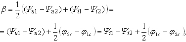

Характеристическая постоянная фазы β четырёхполюсника характеризует изменение начальной фазы напряжения или тока при передаче энергии от источника к нагрузке. Эту величину выражают в угловых единицах - радианах или градусах .
Для несимметричного ЧП

(2.147)
а для симметричного ЧП постоянная фазы равна разности начальных фаз напряжений (токов) на зажимах ЧП: